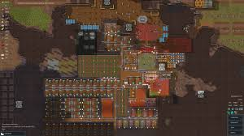

Welcome to RimWorld Universe
RimWorld is a critically acclaimed sci-fi colony simulator developed by Ludeon Studios. You’re tasked with helping a small group of crash survivors build a new life on a remote planet filled with dangers and mysteries. The game blends survival, storytelling, and management as you guide colonists, each with unique traits, through brutal environments, hostile factions, and unforeseen events. The game is heavily inspired by science fiction themes and the mechanics of classic colony simulators, offering players the freedom to build and manage their own settlements, interact with diverse characters, and navigate a multitude of challenges. RimWorld is more than just a game; it's an experience that challenges players to think critically, plan strategically, and embrace the unpredictability of life on a new planet. Its blend of storytelling, management, and survival elements makes it a must-play for fans of simulation games.
Gameplay Overview
Every game in RimWorld is a unique story. You’ll start with three random colonists, each with specific skills, backstories, and personality quirks. Your main goal? Keep them alive, but it’s easier said than done! Face hostile wildlife, natural disasters, and even your colonists' internal conflicts. Whether you focus on farming, hunting, building, or even recruiting allies, your choices impact the fate of your colony. There are 4 main endings you can get but most players don't bother getting them but instead focus on making the best colony while surviving as long as they can or how long their computer last depending how many mods they have. In Rimworld the most common and unwriten ending is where you acomplished whatever you needed to do in the game like bulding the biggest base and then most players start a new playthrough.
